Web admin and mobile app for site attendance, induction, safety documents and day-to-day site control.
Construction Runner is the platform your company uses to run sites: who is on site, who is inducted, which RAMS and briefings apply, and the tasks and deliveries for that site only.
There are two products that work together:
Open the public website (construction photography and product overview), then choose Member Login to reach the admin sign-in screen.
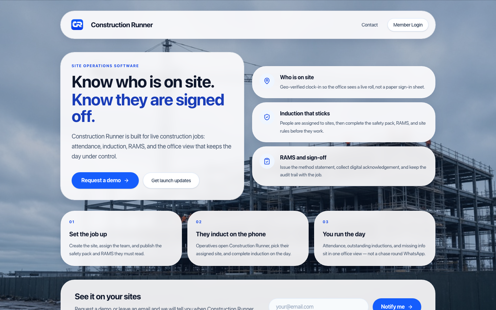
Figure 1. Public website — Member Login (top right) opens the admin sign-in page.
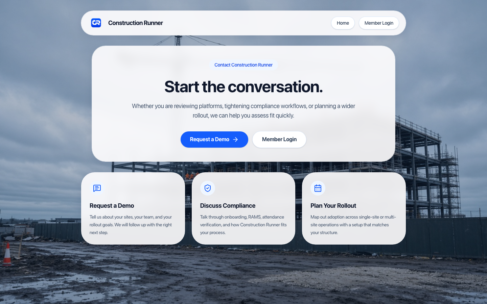
Figure 2. Contact page — request a demo or discuss a rollout at www.construction-runner.com/contact
| Role | Where they work | What they can do |
|---|---|---|
| Super Admin | Web | Whole company: create sites, invite people, assign any role including Super Admin, see every site’s documents and attendance. |
| Site Admin | Web | Only the sites ticked for them. Upload RAMS/briefings, manage attendance and users on those sites. Cannot create new sites or grant Super Admin. |
| Supervisor | Web + app | Same site ticks as Site Admin. Run live attendance and role call, add tasks, review safety. On the app they also get Supervisor Tools. |
| Operative | App only | Sign in/out at the geofence, complete induction, acknowledge RAMS and briefings, tasks, deliveries, near miss. Web login is not available. |
| Subcontractor admin | Web | Onboard their own operatives for sites they are linked to. Invite with a site invite code. |
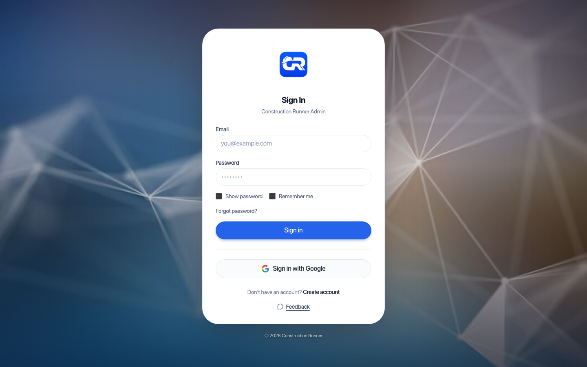
Figure 3. Construction Runner Admin — Sign in.
From sign-in, click Create account. Two tabs:
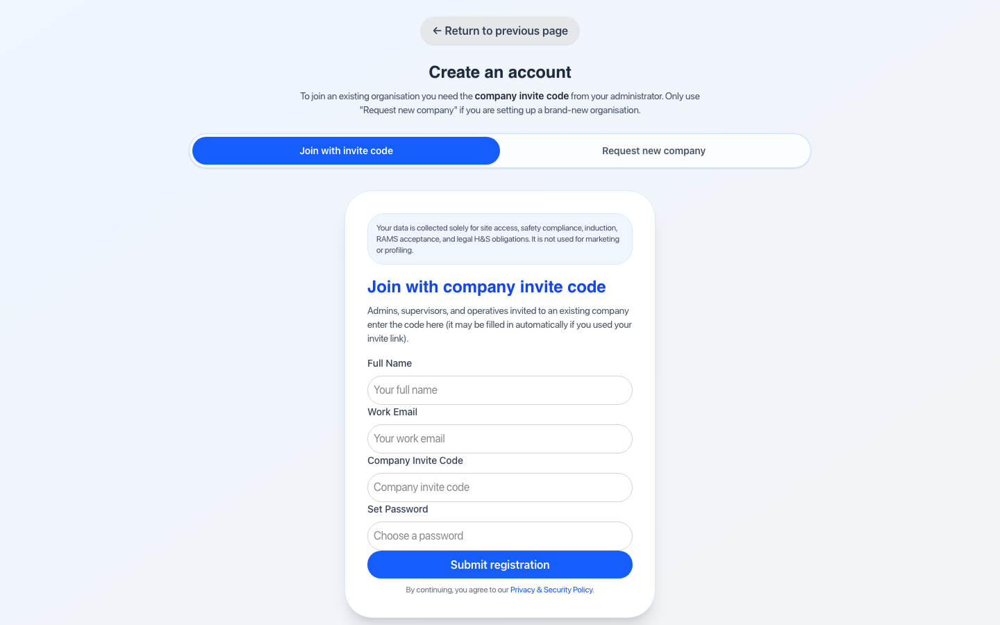
Figure 4. Create an account — join with company invite code.
A Super Admin can also send a reset from Users → row menu → Send reset email.
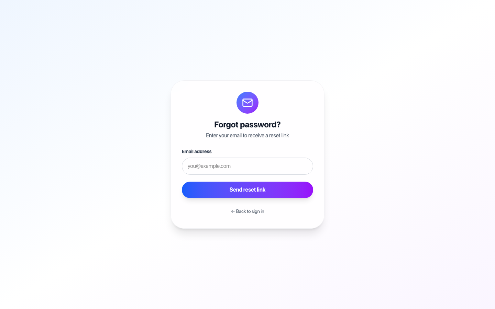
Figure 5. Forgot password — email a reset link.
After sign-in, the left sidebar is your map of the product. Super Admins see the full company. Site Admins and Supervisors only see the sites assigned to them. The Dashboard opens with a company snapshot — active sites, who is on site, and open tasks — so you can jump into the work that matters today.
| Sidebar | Typical users |
|---|---|
| Dashboard | Everyone on web |
| Sites, Subcontractors, Missing Info, Users, Pending approvals, Attendance | Super Admin, Site Admin, Supervisor, Subcontractor admin |
| Tasks, Deliveries, Assets, Messages | Same |
| Safety: RAMS, Briefings, Induction safety, COSHH, Site Rules, Alerts, Near Miss, Logs | Same |
| Settings / Profile | Everyone on web |
Only a Super Admin (or platform Superuser) can:
Site Admins and Supervisors can invite or approve people as Operative only.
Open Sites. Super Admins see every company site. Site Admins and Supervisors see only assigned sites. Status columns use the same soft chips as the rest of the admin (Active / On map / Required).
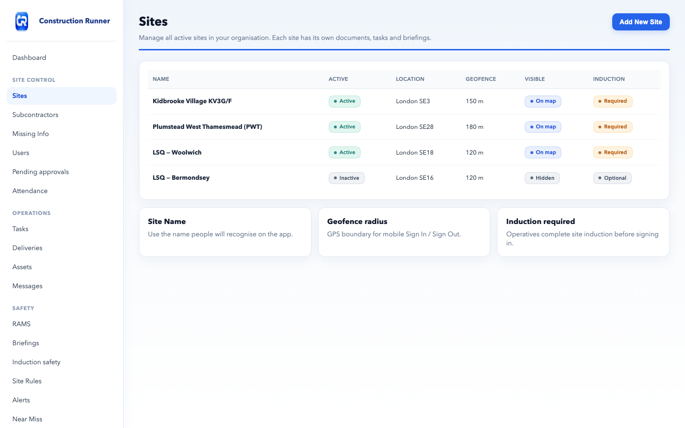
Figure 6. Illustrated Sites screen (labels match the live admin). Each site is its own folder for documents and tasks.
Row actions include View map, Toggle visible, Toggle active, and Delete site. Open a site to use the Details, Subcontractors and Induction tabs.
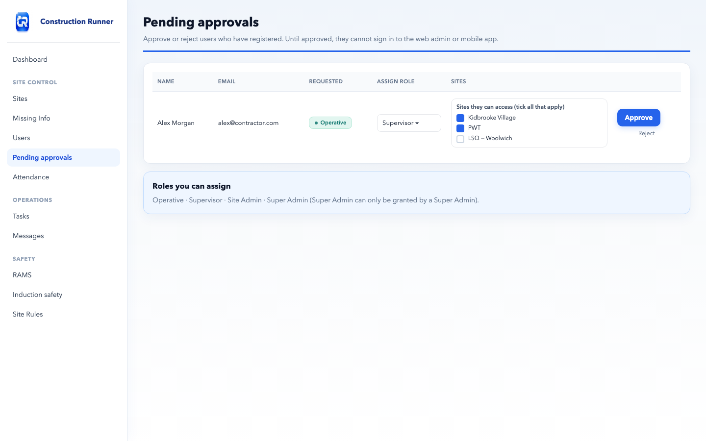
Figure 7. Illustrated Pending approvals — assign a role and tick sites before Approve.
On Users, open the row menu for a Site Admin or Supervisor and choose Assign sites…. Tick every site they work on, use Select all / Clear if needed, then Save.
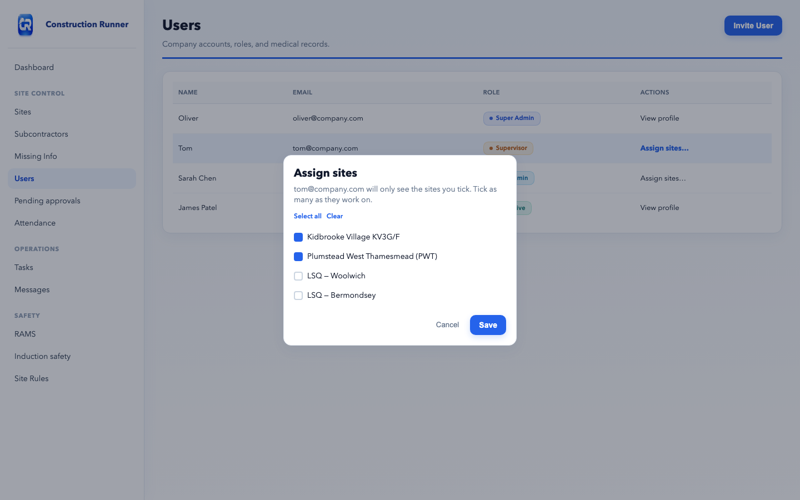
Figure 8. Illustrated Assign sites — multiple sites for Site Admins and Supervisors. Role chips match the live admin.
Other user actions: View profile, Medical records, Set role, Send reset email, Delete user.
Open Attendance. Pick a date (or Today). Two tabs:
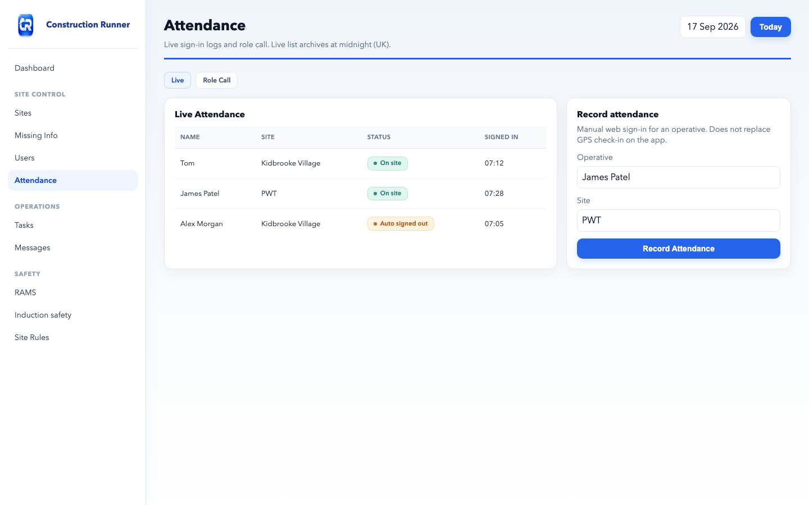
Figure 9. Illustrated Attendance — Live log plus optional manual Record attendance.
Mobile auto sign-out reasons can appear as geofence exit, left site, or auto sign-out (for example if GPS goes silent for too long).
Add Task — Title, Description (optional), Assigned To (multiple people), Site (required), Due date. Super Admins, Site Admins and Supervisors can add tasks. Operatives complete them on the app (Open / In progress / Done).
Add Delivery — Reference, Supplier / Wholesaler, Site, Scheduled At, Notes. Operatives can submit proof of delivery and load photos on the app.
Add equipment, assign to operatives, upload inspection evidence. Operatives see My Assets on the app.
Open Messages. You only see conversations you are in. Click New, then pick the people who should receive the thread. You can optionally choose Broadcast to all company users when everyone needs the same message. Reply in the thread.
Open Safety in the sidebar.
| Item | What to do |
|---|---|
| RAMS | Upload RAMS for a chosen site (PDF). Operatives acknowledge on the app. Company logo from Settings appears on PDFs. |
| Briefings | Upload toolbox talks. Operatives Sign & acknowledge. Super Admins/Supervisors can download acknowledgement reports. |
| Induction safety | Company safety pack shown during induction (the “read site safety information” step). Edit once for the company; it is not the same as Site Rules. |
| COSHH | Substance information, hazard symbols and PPE. |
| Site Rules | PPE, Emergency Procedures, Conduct — per site. Save; optional file on emergency rules. |
| Alerts | Add Alert — Info / Warning / Critical + site. |
| Near Miss | Reports from the app. Mark reviewed, Export PDF. Unreviewed count shows a red badge on Safety. |
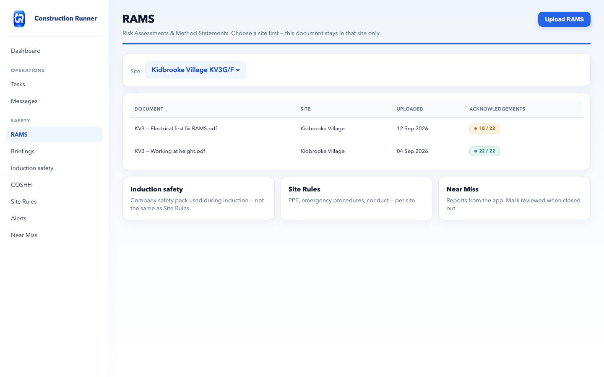
Figure 10. Illustrated RAMS — select the site, then upload. Acknowledgements show per document. Safety also lists Induction safety and Site Rules.
Missing Info lists people who still need emergency contact or medical details filled in. Use it to chase incomplete profiles before they arrive on site.
Induction is stored per site and expires 365 days after completion. On a site, the Induction tab shows Inducted, Expired, Induction Required, and lets an admin mark complete or reset.
When someone inducts on the app they: read Induction safety (company pack) → acknowledge RAMS → confirm site rules → Complete induction.
Admins who go to site should be inducted like everyone else (see Profile → Induction on the app, or the site Induction tab on web).
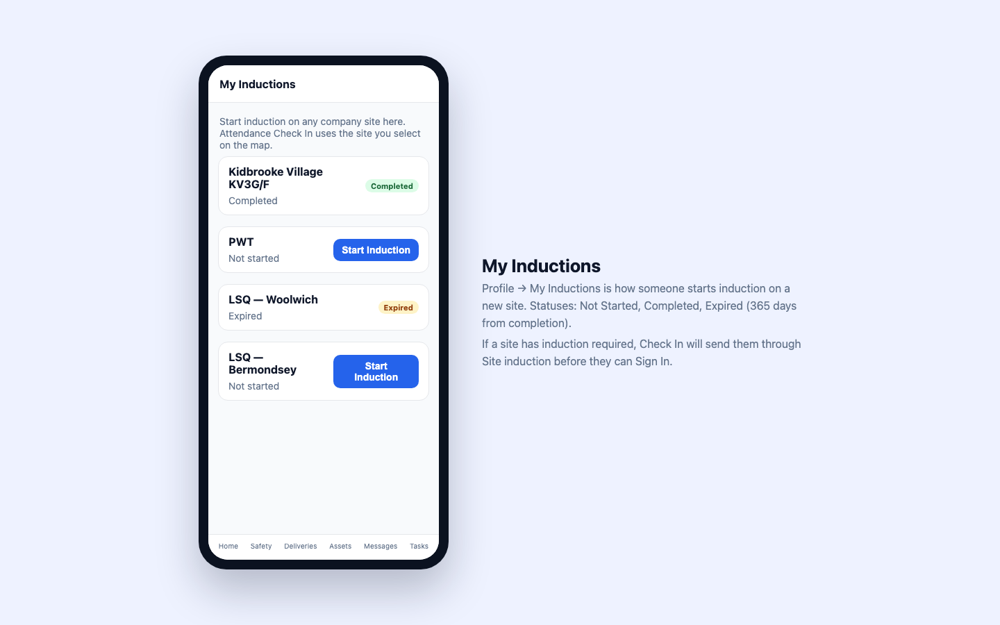
Figure 11. Illustrated My Inductions on the app — start induction on a new site here. Statuses: Not Started, Completed, Expired.
Download Construction Runner from the App Store or Google Play. Sign in with the same email and password. Registration in the app also needs a company invite code and then admin approval.
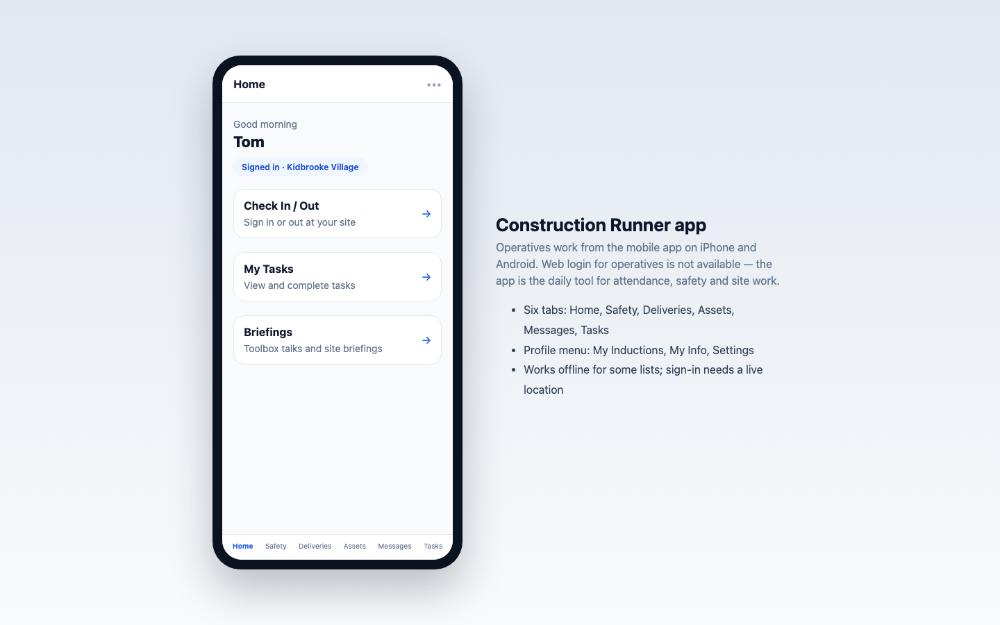
Figure 12. Illustrated Home tab — Check In / Out, tasks and briefings. Bottom tabs: Home, Safety, Deliveries, Assets, Messages, Tasks.
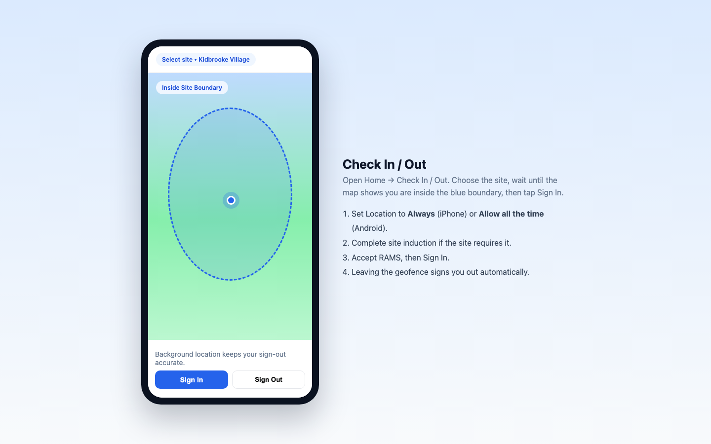
Figure 13. Illustrated Check In / Out map. You must be inside the boundary to Sign In. Leaving the site signs you out automatically.
Settings tabs: Personal Information, Company (name, address, logo, invite code), Notifications, Security (Change Password, Two-Factor Authentication, Session Timeout), Display, Data & Privacy (Export Data, Delete Account).
Profile tabs: Personal, Activity, Certification & Training, Medical History, Induction, Privacy & Data. Need help? The sidebar links to info@construction-runner.com. Privacy policy: /legal/privacy-and-security
Notifications in the top bar clear when you close the panel after reading them (you do not have to click each item).
| Problem | What to try |
|---|---|
| Cannot sign in after registering | Wait for Pending approvals. Ask a Super Admin to Approve and, for Supervisor/Site Admin, tick sites. |
| Operative sent to the website | Use the Construction Runner mobile app. |
| Supervisor or Site Admin sees no sites | Users → Assign sites… and tick at least one site. |
| Cannot Sign In on the app | Enable Always / Allow all the time location. Stand inside the geofence. Complete induction if required. Accept RAMS. Check you have a network connection. |
| Did not auto sign out | Confirm Location is Always. Open Settings from the in-app prompt. Stay signed in only while on site. |
| Reset link expired | Request a new link from Forgot password. |
| Wrong documents on a site | Check the site selected when uploading. Content does not copy across sites. |
| Near Miss badge stays on | Open Near Miss and Mark reviewed. |
| Cannot see a message thread | You only see conversations you were added to. Ask the sender to include you, or use Broadcast when everyone must see it. |